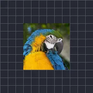

Tamaño de pulso

Aumenta y reduce la capa una y otra vez, con una onda senoidal o triangular.
Tamaño del pulso agranda y encoge una capa una y otra vez. Reducir y Aumentar son el tamaño más pequeño y más grande como múltiplo de lo normal (0,9 es el 90 %), Frecuencia es el número de pulsos por segundo y Onda es Seno (suave) o Triángulo. Un latido o un logotipo sincronizado con el ritmo son usos habituales. Consulta también Opacidad del pulso.
Ajustes
| Ajuste | Tipo | Rango | Predeterminado |
|---|---|---|---|
| Frecuencia | Número | 0 Hz a 16 Hz | 2 Hz |
| Reducir | Número | 0 a 1 | 0.9 |
| Aumentar | Número | 1 a 2 | 1.1 |
| Fase inicial | Número | 0 a 2 | 0 |
| Onda | Opción | Seno, Triángulo | Seno |